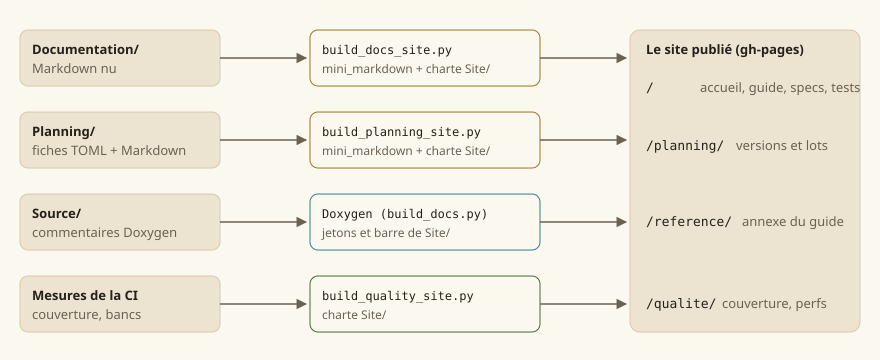

Écrire la documentation
Cette page dit comment la documentation est faite, et donc comment y ajouter une page sans rien casser. Elle vaut pour le guide, les spécifications et la planification : les trois s'écrivent au même format et se rendent par le même moteur.
Le principe : du Markdown nu, un seul moteur
Une page est un fichier Markdown lisible tel quel dans le dépôt et sur la forge : pas une commande Doxygen, des liens relatifs ordinaires. Le site n'ajoute que la mise en forme.
{kind=link}

| Partie du site | Source | Générateur |
|---|---|---|
| Accueil, guide, spécifications, cahier de test | Documentation/ | Documentation/outils/build_docs_site.py |
| Planification (versions, lots, référentiels) | Planning/ | Planning/outils/build_planning_site.py |
| Qualité (couverture, performances) | mesures de la CI | scripts/docs/build_quality_site.py |
| Référence du code — l'annexe du guide | commentaires de Source/ | Doxygen, par scripts/docs/build_docs.py |
Les deux premiers partagent le moteur Markdown (Planning/outils/mini_markdown.py, sans dépendance) ; les quatre partagent la charte de Site/ — aucune couleur ne s'écrit ailleurs que dans Site/tokens.css.
Note — Avant la refonte, toutes ces pages passaient par Doxygen (
@page,@subpage,@ref,\anchor). Doxygen ne lit plus que le code : une commande Doxygen restée dans une page fait échouerlint_docs.py.
Où ranger une page
| Je veux écrire… | Je crée… | Et je la cite dans… |
|---|---|---|
| une page du guide | Documentation/Guide/guide-<sujet>.md | le plan de Guide/README.md |
| une page du manuel | Documentation/Guide/Manuel/<sujet>.md | Guide/Manuel/README.md |
| une spécification | Documentation/Specification/<sujet>.md | la liste de Specification/README.md |
| un lot | Planning/versions/<version>/lots/LOT-NNN-<objet>.md | rien : le site le trouve |
L'ordre de lecture d'une partie est celui où son README.md cite ses pages ; le menu latéral et les liens « précédent / suivant » en découlent. Une page que rien ne cite est une erreur de lint (page orpheline). Le cahier de test ne s'écrit pas : il est engendré (scripts/docs/generate_cahier_test.py) — y compris sa matrice de traçabilité, tirée des exigences que les tests citent. Une seule de ses pages s'écrit à la main, la recette manuelle : le générateur la laisse en place, la cite depuis le README.md du cahier, et refuse de tourner si elle manque.
Les conventions d'écriture
Titres et ancres
Un seul titre # par page : c'est son nom dans le menu. Les titres ## forment le sommaire de la page. Une ancre se déduit du titre ; pour une ancre stable, que d'autres pages citent, l'écrire :
## Le rendu déterministe {#rendu-deterministe}Liens
Toujours relatifs, vers le fichier source — le site les réécrit :
[la boucle de jeu](guide-boucle.md) une page voisine
[EX-CBT-020](../Specification/combat.md#EX-CBT-020) une ancre d'une autre partie
[LOT-128](../../Planning/versions/v0.1.0/v0.0.1-demo/lots/LOT-128-cartes-maquettes.md)
[`Level.h`](../../Source/Core/Levels/Level.h) un fichier du dépôt : ouvert sur la forgeTrois choses se relient toutes seules quand elles sont écrites en code :
| Écrit | Devient un lien vers |
|---|---|
` EX-CBT-020 ` | la déclaration de l'exigence, dans sa spécification |
` LOT-128 , LOT-19 , LOT-EDITOR-03 ` | la fiche du lot, dans la planification |
` core::BattleGrid , hmi::Camera2D::zoom ` | le symbole, dans la référence du code |
Exigences
Une exigence se déclare par une puce qui s'ouvre sur son identifiant en gras, dans une page de Documentation/Specification/ — et nulle part ailleurs :
- **EX-CBT-020** — Le déplacement d'un tour est borné par une portée en cases…scripts/checks/lint_exigences.py vérifie qu'elle est déclarée une fois, et citée au moins une fois ailleurs ; --next donne le prochain numéro libre. Le site en tire l'index des exigences, avec le code et les tests qui citent chacune, et le cahier de test sa matrice de traçabilité. Un test qui garde une exigence la cite dans son commentaire (@brief … (EX-REG-003)) : c'est ce lien, et lui seul, qui fait paraître le cas en face de l'exigence.
Une exigence nouvelle pour une fonction déjà livrée se cite depuis la fiche du lot qui l'a livrée, dans une section « Exigences » de la fiche : le fil exigence → lot → code → test reste entier, même quand l'exigence a été écrite après le code.
Figures, captures et maquettes
Une image seule dans son paragraphe devient une figure, légendée par son texte alternatif — qui doit donc dire ce qu'on regarde, pas « capture 3 » :
| Nature | Dossier | Fabrication |
|---|---|---|
| Capture du jeu ou de l'éditeur | Guide/captures/ | python Documentation/outils/capture_screens.py --bin build/ninja/bin — jamais à la main : une capture se refait |
| Schéma, diagramme du guide (ce que le code fait) | Guide/figures/ | SVG écrit à la main |
| Maquette de spécification (ce qu'un écran ou un mécanisme doit être) | Specification/maquettes/ | SVG écrit à la main ; les maquettes peintes de la charte v2 restent dans les annexes du LOT-87 |
Un SVG porte son propre fond (il s'affiche aussi en thème sombre) et n'emploie que la palette de la charte : ivoire #fbf8f0, sable #ece4d1, filet #d6c9a8, encre #25201a, gris #6a6152, or #9a7420, bourgogne #8a2233, vert #3f6b34, eau #2f7f86.
Attention — Aucune image du corpus (livres de Tanares) ne s'affiche ni ne se décalque dans la documentation. Une maquette est un dessin d'intention, fait ici.
Encadrés
Une citation qui s'ouvre sur **Note**, **Attention** ou **Astuce** devient un encadré coloré. Les autres citations restent des citations.
Ce que le moteur ne rend pas
Le moteur est volontairement réduit : titres, paragraphes, listes (imbriquées, numérotées, à cocher), tableaux, blocs de code, citations, filets, gras, italique, code, liens, images, et les balises <br>, <kbd>, <sub>, <sup>. Pas de HTML libre, pas de notes de bas de page, pas de formule : une formule s'écrit en bloc de code ou se dessine.
Documenter le code
La référence se tire des commentaires Doxygen de Source/. Chaque symbole public porte au moins un @brief ; une fonction, ses @param et son @return :
/**
* @brief Cases atteignables depuis @p origine avec @p budget cases de déplacement.
* @param origine Case de départ, dans la grille.
* @param budget Déplacement restant, en cases.
* @return L'aire atteignable ; vide si @p origine est hors grille.
*/La génération échoue au moindre avertissement : un @param oublié casse la CI. Le guide, lui, explique pourquoi et comment les pièces s'assemblent — il ne recopie pas la référence, il y renvoie.
Vérifier avant de pousser
python Documentation/outils/lint_docs.py # liens, ancres, pages orphelines, lots cités
python scripts/checks/lint_exigences.py # exigences déclarées une fois, citées
python scripts/docs/generate_cahier_test.py --check # cahier de test à jour
python Planning/outils/lint_planning.py # fiches de lots
python scripts/docs/build_docs.py # la référence du code (Doxygen, sans avertissement)
python Documentation/outils/build_docs_site.py --out build/site # les pages
python Planning/outils/build_planning_site.py --out build/site/planning --docs-url ../uv run scripts/check.py rejoue d'un coup tous les contrôles du job de lint de la CI. Le site se lit ensuite en ouvrant build/site/index.html ; la recherche demande un serveur local (python -m http.server -d build/site).
La publication
docs.yml publie à chaque poussée sur main : les pages à la racine, la référence sous reference/, la planification sous planning/, la qualité sous qualite/. La branche gh-pages est remplacée en entier : rien ne s'y édite.